HARUKA OTSUKA
front end developer and web designer.
私の今までの活動や身につけたスキルをまとめています。
ぜひ見ていただけると嬉しいです。

front end developer and web designer.
私の今までの活動や身につけたスキルをまとめています。
ぜひ見ていただけると嬉しいです。
つくったもの
わたしについて
Webならではの動きのある表現や情報の伝え方に魅力を感じ、
これまでWeb制作におけるフロントエンド開発やWebデザインを行ってきました。
今後はさらに高度なWeb開発に携わりたいと考えているため、
新たな技術の習得を心がけて、日々学習を続けているところです。